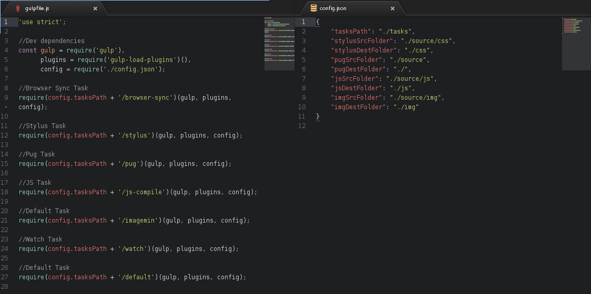
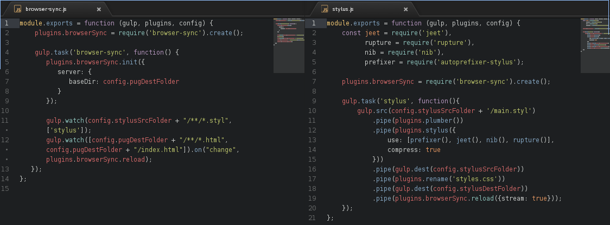

Workflow simples, porém muito eficiente
Automatizando seu workflow front-end com Gulp modularizado e Stylus
Salve salve peoples, tudo na paz?
Não sei apenas eu ou mais alguém já passou por isso. A cada novo projeto, ter que refazer o workflow, com task runner, pré-processador CSS, template engine, frameworks, mi-mi-mi.
Fui um pouquinho tapado em demorar pra ter um repositório como base de workflow! Eis que surgiu esse workflow simples, porém muito eficiente!
Fiquei tão encanado com isso, que resolvi criar um workflow. Porém, uma coisa acabou me tirando o sono, literalmente. As tarefas do Gulp, muitas e muitas linhas no gulpfile.js.
Sobre as tarefas do Gulp, tá lá no final do artigo. Mas leia tudinho, sem pressa! =D
Para entendermos melhor como ficou tudo, vamos começar pela estrutura de arquivos:
- _public/
Nessa pasta ficam os arquivos compilados, após o desenvolvimento. Vísivel no navegador; pronto para ser enviado para homologação. Separados pelas pastas css / img / js / _includes.
- _source/
Aqui é onde a magia realmente acontece! rs'
Nosso ambiente de produção. Onde utilizo o Pug como template engine; Stylus como pré-processador CSS. Tentei implementar RSCSS & ITCSS como metodologias. Além da combinação Jeet + Nib + Rupture como grid system, mixins para Stylus e media queries, respectivamente.
- tasks
Meu bebê do s2! Nessa pasta possui um arquivo.js para cada tarefa do Gulp.
No decorrer desse artigo irei entrar em mais detalhes de como modularizei as tarefas do Gulp .
RSCSS e ITCSS? Why??
Sempre busco formas de padronizar minhas declarações CSS e uma arquitetura boa, de fácil manutenção. Li um pouco sobre BEM , porém não gostei. Achei a nomenclatura das classes sugerida muito extensa e em determinados projetos completos poderia ser confuso para manutenção. Visto isso, encontrei dois artigos do Willian Justen sobre ambas as metodologias, RSCSS e ITCSS.
Ele explicou com uma didática tão leve que foi de longe um dos melhores artigos sobre arquiteturas CSS. Já tinha optado por ITCSS em outras leituras, porém esse artigo em específico concretizei minha decisão.
Aqui, não irei entrar em detalhes de como funciona o ITCSS ou RSCSS. Para isso, passa lá no link do artigo que o Willian Justen compartilhou conosco, que praticamente é uma documentação em pt-BR! =)
Digamos que você vá desenvolver um projeto complexo, de um portal para uma grande empresa/agência, um portal estático ou dinâmico, por exemplo, que irá ter 20 páginas ou mais. No momento em que formos definir a arquitetura CSS para o desenvolvimento vai começar a complicar. Visto isso, o ITCSS surgiu, para organizar nosso CSS de forma escalável e de fácil manutenção.
Beleza, tio! Definimos a arquitetura. Mas e como iremos nomear as classes? Que tipo de padrão podemos utilizar pra isso?
Entra em cena o RSCSS !!!!
Quanto maior o projeto, maior vai ser o número de linhas de declarações CSS. E, acredite, se não houver um padrão, VAI DAR BO! Quem nunca se perguntou pra que classe X ou Y serve, pra que repetiu Z ou A, etc, etc.
Nisso, o RSCSS nos dá ideias claras de como nomear classes sem medo de nos perdemos futuramente. Facilitando assim que o processo de desenvolvimento do nosso CSS seja rentável para qualquer projeto front-end.
Juntar as duas metodologias foi praticamente um casamento perfeito! Parece que as duas são feitas uma para a outra! =D
Mais um ponto a favor do RSCSS é que podemos utilizar essa metodologia junto com Atomic Design. Já temos um padrão de atoms, molecules e organisms nas classes, porém podemos facilmente integrar as duas metodologias. E, podemos ir além, não parar nos atoms.
Baseando-se nas aulas do curso Be MEAN do Suissa, onde ele nos ensina a utilizar Quarks, Hadrons, etc no back-end. Física louca, sem dó, porém, muito efetiva. E sim, podemos basearmos nisso e utilizar em nosso front-end!
E aquela pastinha _includes ali, pra que serve?
No Pug (Jade) podemos utilizar includes. Digamos que você tenha um projeto web complexo, com front e back-end. No front-end, 90% das páginas irão utilizar o mesmo menu, mesmo header, mesmo footer. Apenas o conteúdo de cada página irá mudar. Pra que repetir esse código em todas as páginas ou porque não usar extend template block content?
Simples, tornando a integração do back-end mais fácil, sem complicações, dinâmico. Com um simples include, podemos trabalhar no back-end para trocar o include X de poucas linhas em certos eventos. Já o extend teria um bloco maior, com mais linhas. O carregamento seria um pouco mais demorado que o include, mesmo não sendo notado a olho nú, mas seria.
Visando a performance, fácil integração com back-end e fácil manutenção, a escolha para projetos complexos é ir de include. Uma escolha pessoal, não é regra, não é padrão!
Gulp, deixando-o mais bonitinho ainda =)
A justificava para modularizar as tarefas Gulp foi simples:
Se eu posso componetizar/modularizar meu CSS; com aplicações AngularJS; com aplicações PHP (MVC); com aplicações NodeJS s2; porque não posso fazer isso com as minhas tarefas do Gulp?
Você, dev front-end que conhece e trabalha com Gulp, quantas vezes você parou pra pensar: Poxa meu, quantas linhas eu não tenho em um simples gulpfile.js? Já passaram 110 linhas, que saco! Como posso melhorar isso? Não posso modularizar/componetizar igual fazemos com CSS?
Fiquei extremamente estressado em ver aquele horror. Então, mais noites com poucas horas de sono se foram, rsrs'.
Encontrei inúmeros tutoriais a respeito, porém a maioria utilizava o Browserify ou Webpack. Lendo um pouco sobre cada um deles, acabei chegando a conclusão de que eles são indicados para projetos mais complexos. Um site, portal de notícias, portfolio, hotsite não vi necessidade de implementá-los. Seria um desperdício de tecnologia!
Depois de tantas pesquisas, conheci a dependência gulp-load-plugins encontrando no blog da editora Packt Publishing um EXCELENTE artigo escrito por Brian Hough: How to Simplify Your Development Workflow with Gulp .
Após todas as tarefas em arquivos separados, Gulp modularizado, belezinha, o arquivo gulpfile.js ficou dessa forma:
Com essa dependência, conseguimos criar um arquivo.js para cada tarefa e no gulpfile.js chamar cada tarefa utilizando o require.
Enquanto isso, consumimos o config.json com os caminhos dos diretórios de cada CSS, Imagem, JS, HTML, seja do ambiente de desenvolvimento (source) ou o destino (_public).
Abaixo, você visualiza exemplo de duas tarefas, o browser-sync.js e stylus.js, onde utilizar um simples module.exports para exportamos uma função que já recebe como parâmetro, o próprio gulp além do config.json e a dependência responsável por carregar todas as demais dependências do Gulp (plugins).
Trabalhando dessa forma, caso surga alguma nova dependência e por consequência uma nova tarefa, basta criarmos um arquivo novo, chamarmos com o require e incluirmos nas demais tarefas, caso seja necessário. Fácil manutenção, fácil atualização, fácil integração!
Concluindo..
Que artigo longo, rapaz! rs'
A minha ideia aqui foi compartilhar um pouco de um workflow simples, porém eficiente atende às minhas necessidades atuais em front-end. Sei que tenho muito a melhorar, adicionar mais algumas coisinhas pra melhorar ainda mais esse workflow. Mas por enquanto, atende às minhas necessidades muito bem.
Ainda é um dos primeiros artigos que escrevo, então sorry se não me expressei tão bem em alguns pontos. Se alguém quiser utilizar, fique a vontade, o código está todo em meu GitHub. Peço apenas que dê os devidos créditos! =p
Caso tenha alguma dúvida, sugestão, reclamação, please, entre em contato comigo, através de um simples comentário ou criando uma issue nesse repositório. Se gostou ou não, compartilhe com seus amigos front-end! =p
É isso aí pessoal, vaaleu, até mais! =D